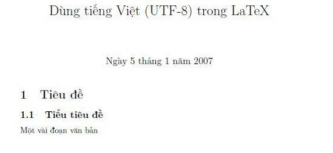

LaTeX được ưa chuộng không chỉ trong giới nghiên cứu (nhất là Khoa học Máy tính và Toán, Vật lý) mà còn được sử dụng nhiều trong cộng đồng *NIX và Mac OS (non-MS). Một khó khăn đối với cộng đồng người dùng LaTeX ở Việt Nam là sự hỗ trợ soạn tài liệu bằng tiếng Việt. Hiện tại đã có rất nhiều giải pháp, trong đó, đáng chú ý là tác giả Nguyễn Hữu Điển ở viện Toán (HN) với các gói hỗ trợ soạn LaTeX tiếng Việt với font ABC trên PcTeX, dự án vnTeX hỗ trợ tiếng Việt cho LaTeX và TeX thông qua các gói macro và phông chữ, dự án Omega định nghĩa chuẩn TeX Unicode dựa trên sự hỗ trợ chuẩn ISO-10646 trên (La)TeX.
Mặc dù có nhiều cách tạo tài liệu LaTeX tiếng Việt, nhưng hiện tại việc sử dụng mã Unicode là xu hướng trội hơn bởi các lý do là đa số các hệ thống máy tính hiện tại đều có font Unicode nhưng chưa chắc có các font như vnI, TCvn, BKHCM, v.v… Sử dụng mã Unicode không những hỗ trợ soạn tài liệu tiếng Việt mà còn các tài liệu đa ngữ. Trong phạm vi bài viết này, tác giả sẽ trình bày các bước để soạn một tài liệu (La)TeX tiếng Việt Unicode dựa theo gói vnTeX (có đóng gói trong các bản phân phối (La)TeX phổ biến như MikTeX, TeXLive). Những bước này dựa vào bài này và bổ sung thêm các phần về cài đặt LaTeX, bộ gõ và trình soạn thảo tiếng Việt Unicode.
Phần 1: Windows
1. Cài đặt LaTeX
Tải gói MikTeX rồi cài đặt với những tính năng mặc định, giả sử cài MikTeX vào thư mục tạm gọi là MIKTEKROOT. Sau đó, thiết lập biến môi trường PATH trỏ đến thư mục MIKTEKROOT\mixtek\bin để bạn có thể dùng lệnh latex hoặc pdflatex tại bất kỳ cửa sổ lệnh (command prompt) nào. Sau bước này, chúng ta giả thiết là bạn đã có môi trường (La)TeX trên Windows.
2. Chuẩn bị các gói hỗ trợ tiếng Việt Unicode
2.1 Cài đặt gói vnTeX (vntex)
Sử dụng trình Package Manager (menu Start/MikTeX/Browse Package), sau đó chọn gói vnTeX để trình Package Manager tự tải về cài đặt.
2.2 Cài đặt gói Unicode (ucs) hỗ trợ UTF-8
- Tải gói Unicode (ucs) ở địa chỉ: http://www.unruh.de/DniQ/latex/unicode
- Giải nén gói
unicode.zip - Copy thư mục
uscvừa giải nén vàoMIKTEXROOT\tex\latex
2.3 Cập nhật các gói vừa cài đặt cho TeX
Cập nhật các gói trên bằng cách thực thi lệnh mktexlsr (hoặc texhash) ở dấu nhắc lệnh
3. Soạn thảo tiếng Việt Unicode
Bạn có thể soạn thảo LaTeX bằng một trong những trình soạn thảo hỗ trợ Unicode sau:
Ngoài ra, nếu bạn sử dụng môi trường Eclipse thì có thể soạn LaTeX bằng gói plugin TeXclipse khá mạnh và thuận tiện, không phụ thuộc hệ điều hành, chỉ cần có JRE (Java Runtime Environment). Khi soạn thảo, bạn nhớ chỉ định encoding cho file .tex là UTF-8 trong Eclipse thì có thể soạn thảo tiếng Việt với Texclipse.
Để gõ được tiếng Việt trên Windows thì bạn cần thêm trình bộ gõ, chẳng hạn Unikey, hoàn toàn miễn phí, gọn nhẹ và chạy ổn định. Unikey hỗ trợ khá nhiều bảng mã như TCvn, vnI, BKHCM, Unicode,etc. và hỗ trợ các kiểu gõ quen thuộc Telex, vnI, hoặc tốc ký.
4. Tạo tài liệu LaTeX tiếng Việt
4.1 Soạn tài liệu
Dùng bất kì một trình soạn thảo nào ở trên, soạn một file tv.tex như sau.
\documentclass{article}
\usepackage[utf8]{inputenc}
\usepackage[vietnam,english]{babel}
\title{Dùng tiếng Việt (UTF-8) trong LaTeX}
\begin{document} \selectlanguage{vietnam}
\maketitle \section{Tiêu đề}
\subsection{Tiểu tiêu đề}
Một vài đoạn văn bản
\end{document}
Nội dung này có thể xem như là khung sườn cho các tài liệu LaTeX tiếng Việt của bạn, chú ý những phần sau:
\usepackage[utf8]{inputenc}
\usepackage[vietnam,english]{babel}
và
\selectlanguage{vietnam}
Như vậy, một tài liệu LaTeX tiếng Việt có sườn (template) đơn giản như sau:
\documentclass{...}
\usepackage[utf8]{inputenc}
\usepackage[vietnam,english]{babel}
\title{...}
\begin{document}
\selectlanguage{vietnam}
\maketitle
...
\end{document}
4.2 Biên dịch và tạo tài liệu PS hoặc PDF
Dùng các trình biên dịch như latex hoặc pdflatex để biên dịch tài liệu tv.tex.
latex tv.tex
dvips tv.dvi
ps2pdf tv.ps
hoặc
pdflatex tv.tex
Kết quả tài liệu tiếng Việt sau khi biên dịch.
